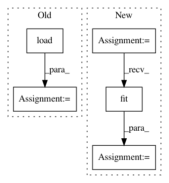

07cc05e233b45d78435639b018d48a373af9e533,dipy/sims/tests/test_phantom.py,,test_phantom,#,28
Before Change
def test_phantom():
fimg,fbvals,fbvecs=get_data("small_64D")
bvals=np.load(fbvals)
bvecs=np.load(fbvecs)
bvecs[np.isnan(bvecs)]=0
gtab = gradient_table(bvals, bvecs)
N=50 //timepoints
vol=orbital_phantom(gtab,
func=f,
t=np.linspace(0,2*np.pi,N),
datashape=(10,10,10,len(bvals)),
origin=(5,5,5),
scale=(3,3,3),
angles=np.linspace(0,2*np.pi,16),
radii=np.linspace(0.2,2,6))
ten=Tensor(vol,bvals,bvecs)
FA=ten.fa()
FA[np.isnan(FA)]=0
assert_equal(np.round(FA.max()*1000),707)
After Change
angles=np.linspace(0, 2 * np.pi, 16),
radii=np.linspace(0.2, 2, 6))
m = TensorModel(gtab)
t = m.fit(vol)
FA = t.fa
FA[np.isnan(FA)] = 0
In pattern: SUPERPATTERN
Frequency: 4
Non-data size: 5
Instances
Project Name: nipy/dipy
Commit Name: 07cc05e233b45d78435639b018d48a373af9e533
Time: 2012-11-29
Author: stefan@sun.ac.za
File Name: dipy/sims/tests/test_phantom.py
Class Name:
Method Name: test_phantom
Project Name: nipy/dipy
Commit Name: 07cc05e233b45d78435639b018d48a373af9e533
Time: 2012-11-29
Author: stefan@sun.ac.za
File Name: dipy/sims/tests/test_voxel.py
Class Name:
Method Name: test_single_tensor
Project Name: biolab/orange3
Commit Name: 887ee40cf11e939de737903a1d867eb41f49acb4
Time: 2014-12-04
Author: martin.strazar@gmail.com
File Name: Orange/widgets/classify/owclassificationtreegraph.py
Class Name:
Method Name:
Project Name: autorope/donkeycar
Commit Name: b85a210e72d4333b71c72f33b905de0ad0070c17
Time: 2017-02-18
Author: wroscoe@gmail.com
File Name: scripts/train.py
Class Name:
Method Name: